Amsterdam
Ride the canals
Explore Amsterdam entre canaux illuminés, culture vélo, coffee spots urbains et quartiers iconiques.
Le vélo reste le moyen le plus rapide et authentique pour explorer la ville.
Les canaux d’Amsterdam offrent une ambiance unique de jour comme de nuit.
De Jordaan à De Pijp, découvre les meilleurs cafés urbains de la ville.
Van Gogh Museum, Rijksmuseum et quartiers historiques incontournables.
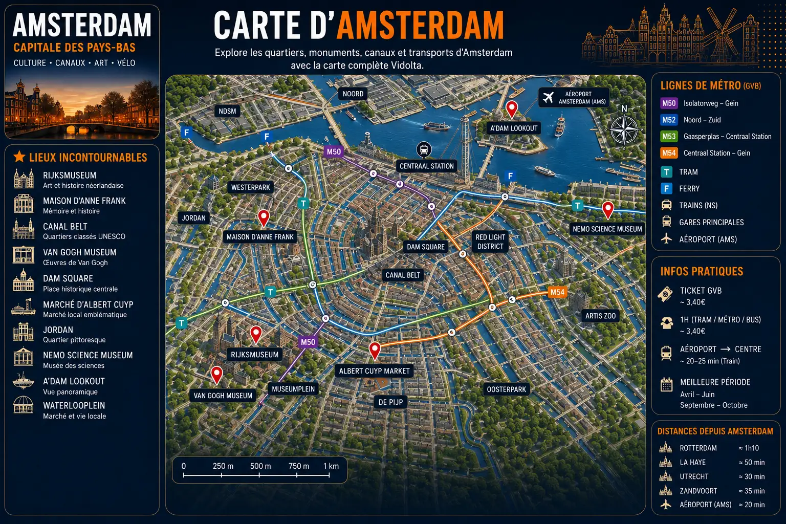
Au-delà de ses monuments, Amsterdam se découvre en vivant son quotidien : pédaler le long des canaux, savourer un stroopwafel tout juste préparé, partager un verre dans un Brown Café ou admirer les façades historiques au coucher du soleil. Des expériences simples qui font toute la magie de la capitale néerlandaise.
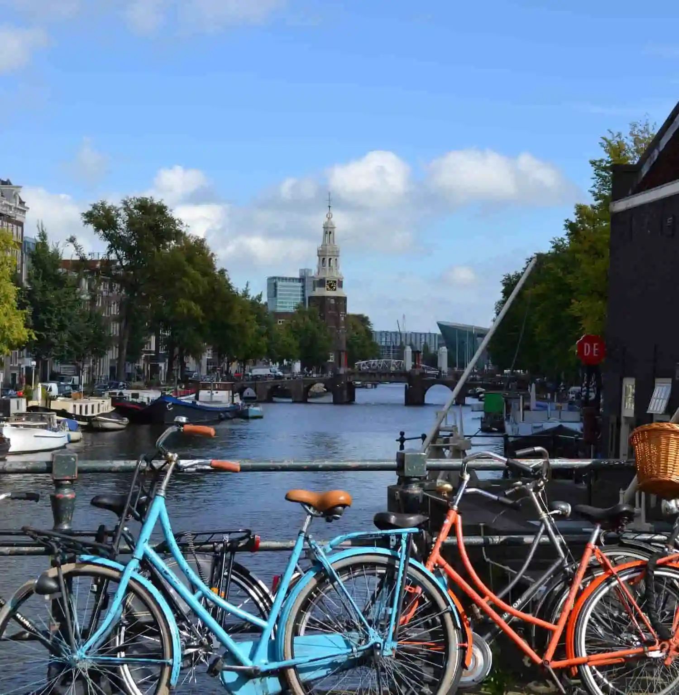
Le vélo fait partie intégrante de l'identité d'Amsterdam. Longer les canaux historiques, traverser les ponts emblématiques et explorer des quartiers comme Jordaan ou De Pijp permet de découvrir la ville sous son visage le plus authentique. Une expérience incontournable pour comprendre le mode de vie amstellodamois.
🚲 Réserver la visite à vélo →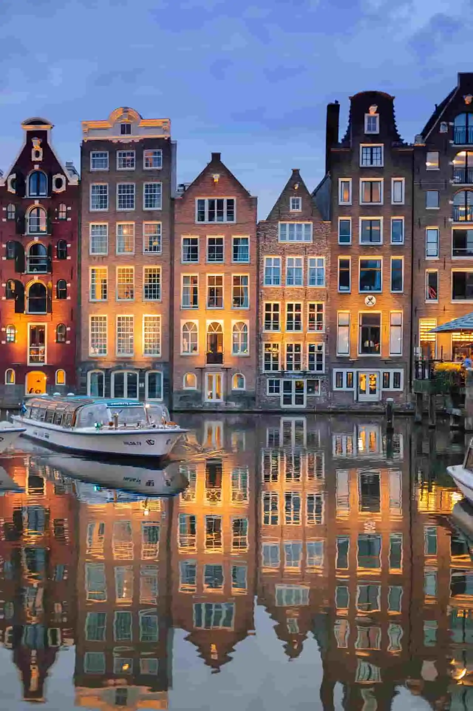
Lorsque le soleil décline et que les façades historiques se reflètent dans l'eau, Amsterdam révèle l'une de ses plus belles ambiances. Entre les ponts illuminés, les péniches et les maisons du Siècle d'Or, une croisière au coucher du soleil offre un point de vue inoubliable sur la ville.
🌅 Réserver la croisière →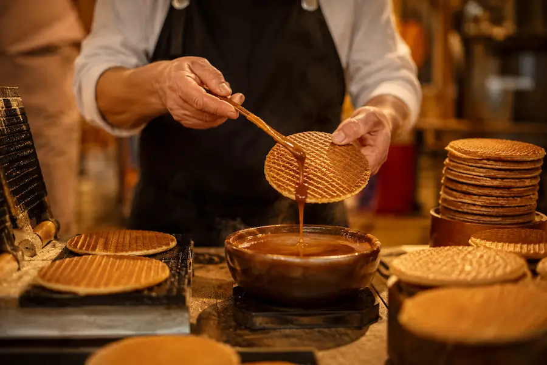
Impossible de quitter Amsterdam sans goûter aux célèbres stroopwafels. Lors d'un atelier traditionnel, apprenez à préparer cette spécialité néerlandaise composée de deux fines gaufres garnies d'un sirop fondant. Une expérience gourmande, conviviale et idéale pour repartir avec un délicieux souvenir.
🍯 Réserver l'atelier →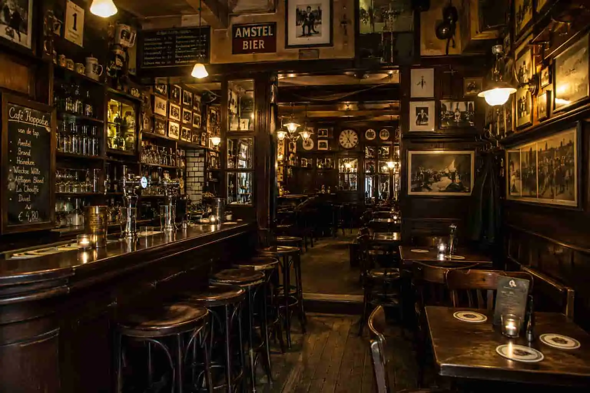
À la tombée de la nuit, poussez la porte d'un Brown Café, ces établissements historiques où les boiseries anciennes, les bières locales et l'ambiance chaleureuse racontent l'art de vivre néerlandais. Un moment simple, authentique et typiquement amstellodamois.
🍺 Découvrir un Brown Café →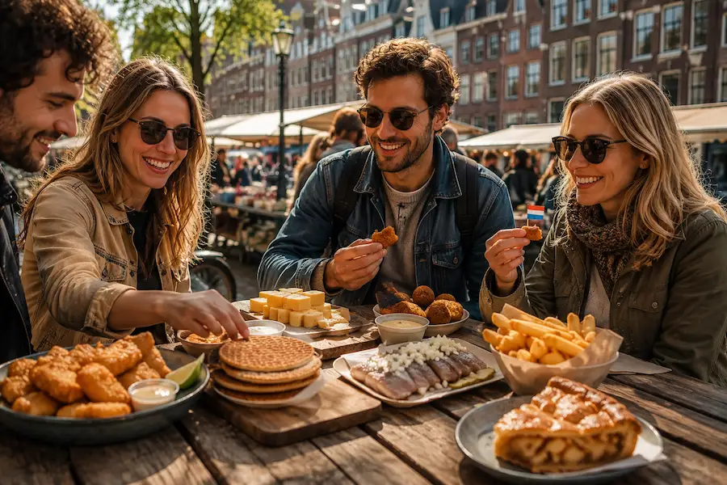
Des fromages hollandais aux harengs, en passant par les bitterballen, les stroopwafels et les influences indonésiennes, chaque dégustation raconte une facette de l'histoire d'Amsterdam. Une visite gourmande idéale pour découvrir la ville autrement, au fil de ses spécialités locales.
🍽️ Réserver le food tour →Entre vélos, tramways, ferries gratuits et pistes cyclables omniprésentes, Amsterdam est l'une des villes les plus agréables d'Europe à explorer. Ici, la voiture devient vite inutile : chaque quartier se rejoint facilement à pied, à vélo ou en transports en commun.
Le réseau GVB permet de rejoindre rapidement tous les principaux quartiers d'Amsterdam. Les ferries gratuits qui traversent l'IJ vers Amsterdam Noord font partie du quotidien des habitants et offrent déjà un bel aperçu de la ville depuis l'eau.
Voir les tickets GVB →Avec des centaines de kilomètres de pistes cyclables, le vélo reste la façon la plus authentique de découvrir Amsterdam. Longer les canaux, traverser les ponts historiques et rejoindre les quartiers emblématiques procure un véritable sentiment de liberté.
Explorer Amsterdam à véloLa I Amsterdam City Card donne un accès illimité aux trams, métros, bus et ferries GVB, tout en incluant l'entrée dans de nombreux musées et attractions. Une solution idéale pour profiter pleinement de la ville tout en maîtrisant son budget.
Découvrir la City Card →Depuis Amsterdam Centraal, les ferries GVB traversent gratuitement l'IJ. En quelques minutes, ils permettent de rejoindre Amsterdam Noord, ses musées, ses anciennes friches industrielles transformées en lieux culturels et quelques-uns des plus beaux panoramas sur la ville.
📍 Centraal → A'DAM Lookout • EYE Film Museum • NDSM
Le quartier le plus pittoresque d'Amsterdam. Entre canaux paisibles, maisons historiques, galeries d'art, cafés intimistes et boutiques indépendantes, Jordaan offre une atmosphère authentique idéale pour un premier séjour.
Le cœur historique d'Amsterdam, à quelques minutes de la place du Dam, de la gare centrale et des principaux canaux. Idéal pour visiter les incontournables à pied et profiter pleinement de l'animation du centre.
Un quartier vivant et cosmopolite réputé pour ses cafés branchés, ses restaurants du monde entier et le célèbre marché Albert Cuyp. Une excellente adresse pour découvrir un Amsterdam plus local et créatif.
Élégant et résidentiel, Oud-Zuid accueille le Rijksmuseum, le musée Van Gogh et le Vondelpark. Un quartier calme, raffiné et parfaitement adapté aux voyageurs recherchant confort, culture et espaces verts.
Le meilleur quartier pour prolonger les soirées. Entre bars animés, salles de concert, restaurants et spectacles, Leidseplein attire les voyageurs qui souhaitent profiter pleinement de la vie nocturne d'Amsterdam.
Accessible gratuitement en ferry depuis la gare centrale, Amsterdam Noord séduit par son architecture contemporaine, ses lieux culturels, ses friches réinventées et ses panoramas sur la ville. Une excellente option pour découvrir un Amsterdam plus moderne et créatif.
Des hôtels de charme au bord des canaux du Jordaan aux adresses élégantes d'Oud-Zuid, en passant par les quartiers animés du centre ou les hôtels design d'Amsterdam Noord, chaque voyageur trouvera facilement le quartier qui correspond à son style de séjour.
Des cafés bruns historiques aux marchés gourmands en passant par les restaurants au bord des canaux, Amsterdam offre une scène culinaire aussi variée que chaleureuse.
Les célèbres Brown Cafés font partie de l'identité d'Amsterdam. Ces établissements traditionnels aux boiseries anciennes offrent une atmosphère chaleureuse et authentique appréciée des habitants comme des visiteurs.
Découvrir →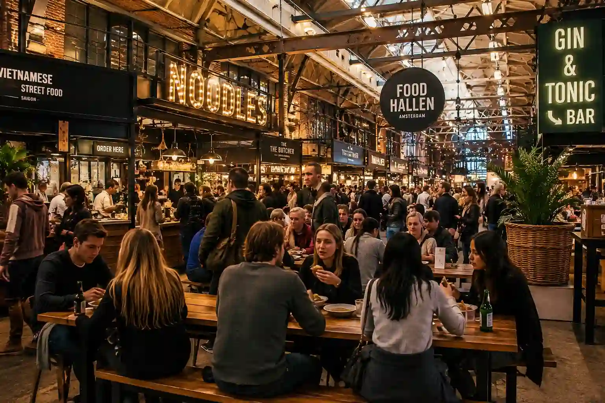
L'un des lieux les plus populaires de la ville pour découvrir la street food néerlandaise et internationale dans une ambiance animée. Une excellente option pour goûter plusieurs spécialités au même endroit.
Explorer Foodhallen →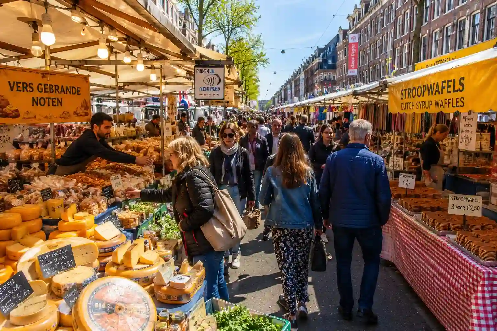
Le plus célèbre marché d'Amsterdam. Idéal pour déguster des stroopwafels fraîchement préparés, des fromages néerlandais et de nombreuses spécialités locales.
Voir le marché →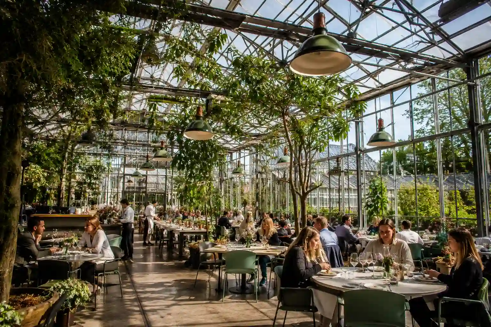
Installé dans une ancienne serre, De Kas est l'un des restaurants les plus emblématiques d'Amsterdam. Une expérience unique où une partie des ingrédients est cultivée directement sur place.
Voir les avis →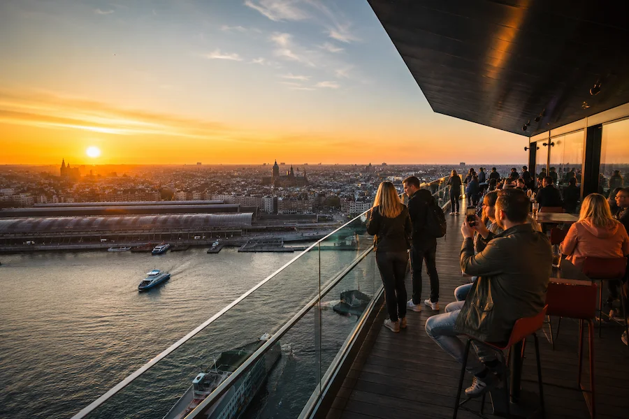
Prenez de la hauteur pour admirer Amsterdam à 360°. Après une courte traversée gratuite de l'IJ en ferry, installez-vous au bar panoramique pour savourer un verre face aux canaux et au port, ou prolongez l'expérience dans l'un des restaurants de la tour. Un moment unique pour découvrir la capitale néerlandaise sous un autre angle.
🍸 Réserver l'expérience →Impossible de découvrir Amsterdam sans explorer ses grands musées, ses lieux de mémoire et ses monuments emblématiques. Ces visites racontent l'histoire, l'art et la culture qui façonnent la capitale néerlandaise depuis des siècles.
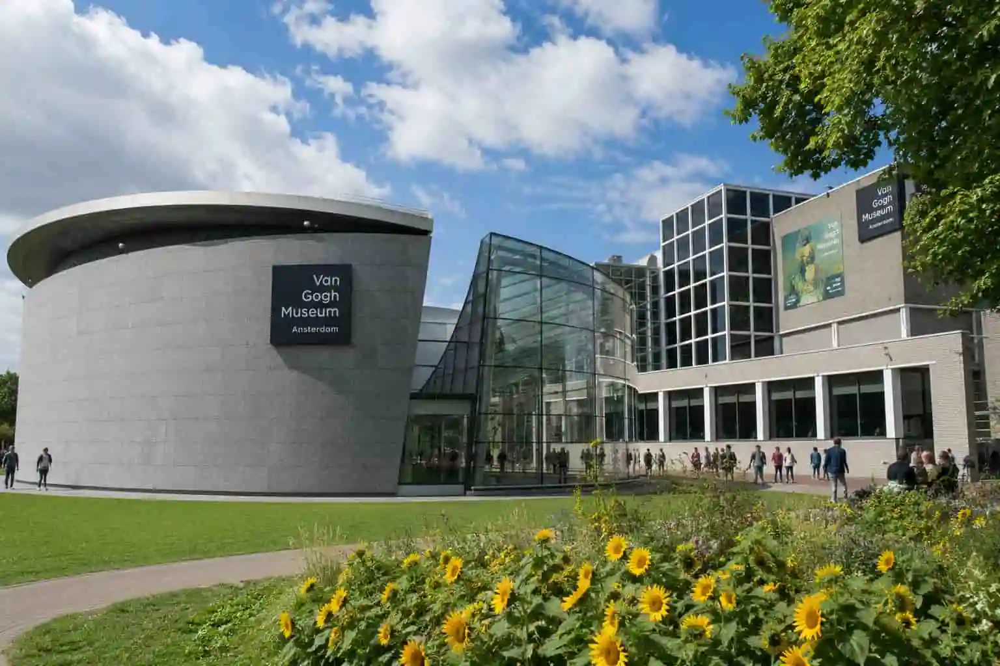
Abritant la plus grande collection au monde consacrée à Vincent Van Gogh, ce musée incontournable permet de suivre l'évolution artistique de Vincent Van Gogh à travers ses tableaux les plus célèbres, ses dessins et sa correspondance.
🎨 Réserver la visite →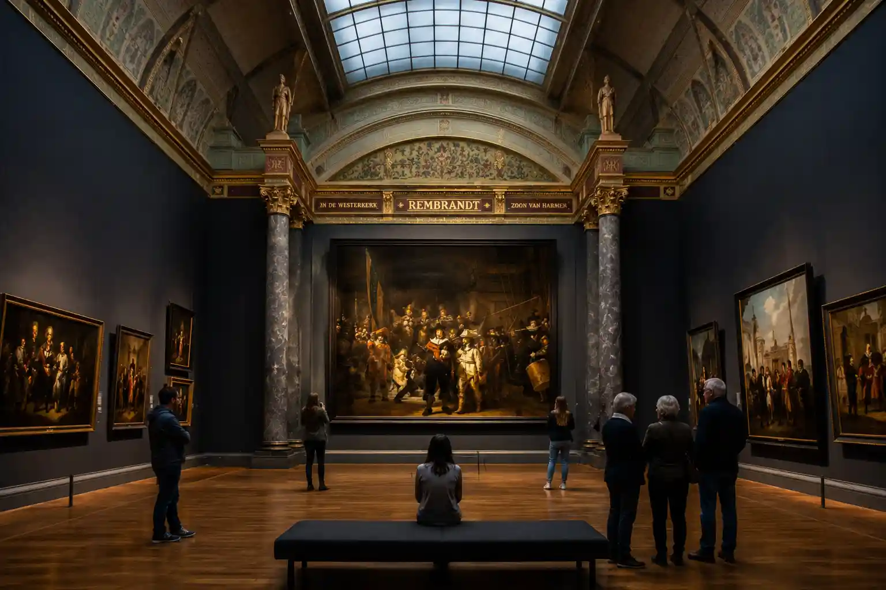
Le musée national des Pays-Bas rassemble certains des plus grands chefs-d'œuvre de l'histoire de l'art néerlandais. Admirez les œuvres emblématiques de Rembrandt, Vermeer et Frans Hals dans l'un des musées les plus prestigieux d'Europe.
🏛️ Réserver la visite →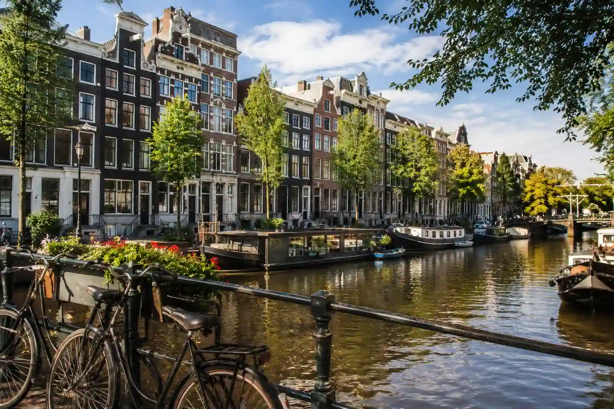
L'un des lieux de mémoire les plus marquants d'Europe. La Maison Anne Frank retrace l'histoire d'Anne Frank et de sa famille durant la Seconde Guerre mondiale. Les billets étant très demandés, il est conseillé de réserver plusieurs semaines à l'avance.
📖 Préparer sa visite →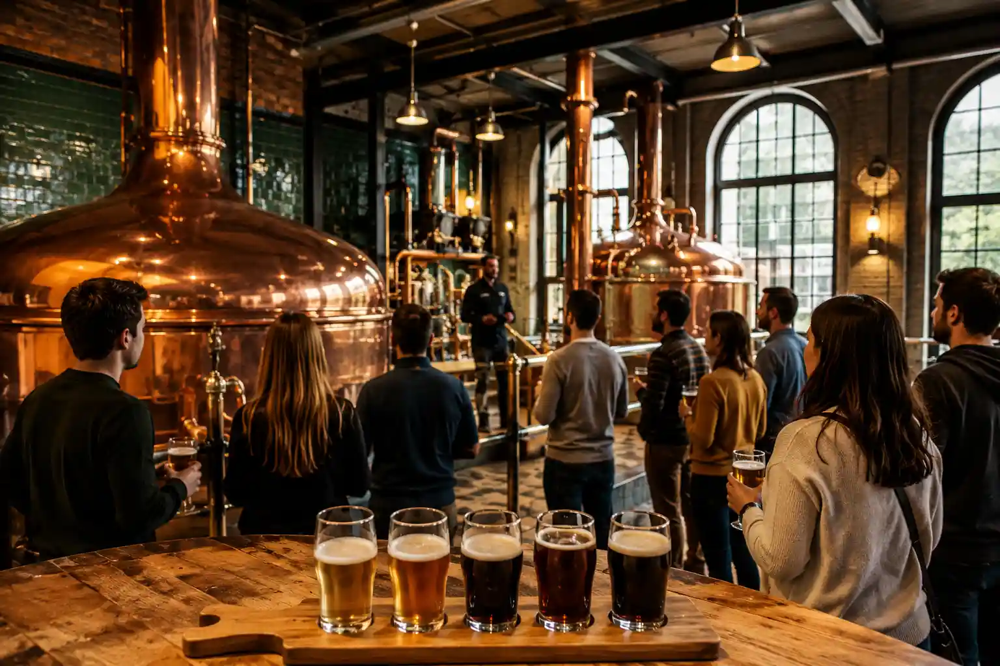
Installée dans l'ancienne brasserie historique de la marque, la Heineken Experience plonge les visiteurs dans l'univers de l'une des bières les plus célèbres au monde. Entre expositions interactives, anecdotes et dégustations, cette visite fait partie des incontournables d'Amsterdam.
🍺 Réserver la visite →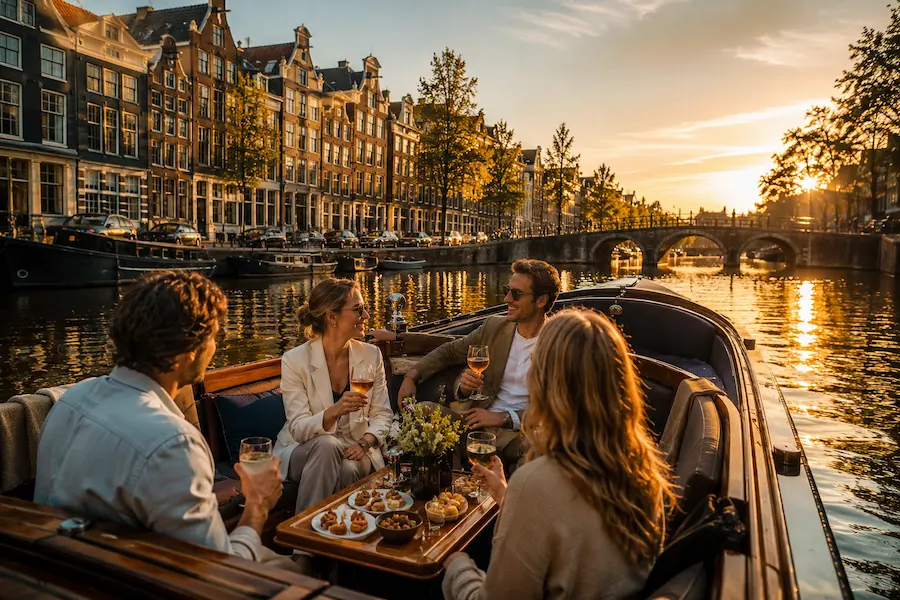
Installez-vous à bord d'un élégant bateau électrique et admirez les plus beaux canaux d'Amsterdam tout en savourant des cocktails et des collations. Entre les façades du Siècle d'Or, les ponts emblématiques et l'atmosphère paisible de la ville, cette croisière offre un moment aussi convivial que romantique.
🍸 Réserver la croisière →Entre football, cyclisme et grands événements populaires, le sport occupe une place importante dans la culture néerlandaise. Assister à une rencontre ou découvrir ces traditions sportives permet de vivre Amsterdam autrement.
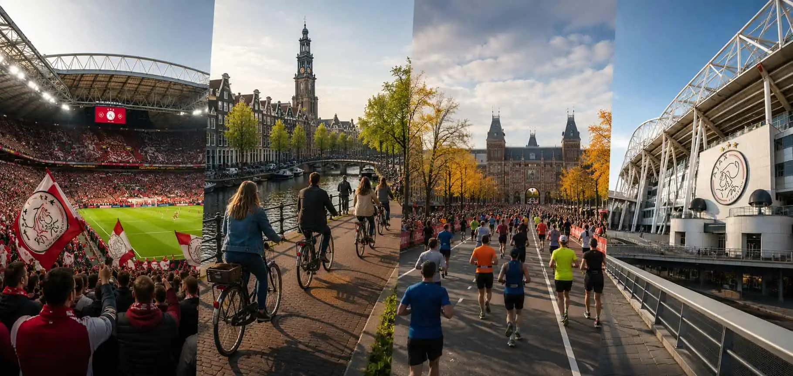
Assister à un match de l'Ajax, c'est découvrir l'une des plus grandes institutions du football européen. Les chants, les tifos et l'ambiance de la Johan Cruyff Arena font de chaque rencontre une expérience inoubliable, même pour les voyageurs qui ne suivent pas le football.
Assister à un matchÀ Amsterdam, le vélo est bien plus qu'un moyen de transport : c'est un véritable art de vivre. Observer le ballet incessant des cyclistes ou parcourir les canaux sur deux roues fait partie intégrante de l'expérience amstellodamoise.
Explorer Amsterdam à véloOrganisé chaque automne, le Marathon d'Amsterdam attire des coureurs du monde entier et traverse plusieurs quartiers emblématiques avant une arrivée dans le stade olympique.
S'inscrire au marathon →En dehors des jours de match, la Johan Cruyff Arena ouvre ses coulisses aux visiteurs. Vestiaires, tunnel des joueurs, bancs de touche et musée permettent de revivre les plus grands moments de l'Ajax et de découvrir l'histoire du football néerlandais.
Visiter la Johan Cruyff Arena →Chaque mois d'octobre, Amsterdam devient la capitale mondiale de la musique électronique. Pendant cinq jours, clubs, salles de concert et lieux insolites accueillent les plus grands DJs de la planète dans une ambiance unique qui attire des centaines de milliers de passionnés venus du monde entier.
🎧 Découvrir l'ADE →Grâce à l'excellent réseau ferroviaire néerlandais, plusieurs villes et sites emblématiques se trouvent à moins d'une heure d'Amsterdam. Idéal pour enrichir votre voyage avec une excursion à la journée.
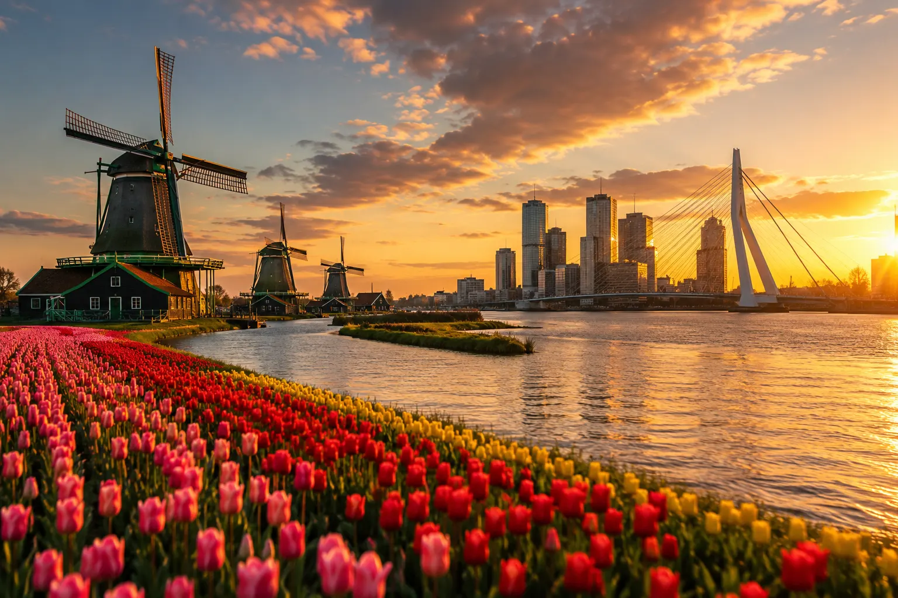
Découvrez les célèbres moulins de Zaanse Schans, le port de Volendam, les maisons traditionnelles de Marken et les paysages emblématiques de la campagne néerlandaise lors de l'une des excursions les plus populaires au départ d'Amsterdam.
Réserver l'excursion →Ouvert au printemps, ce parc floral mondialement connu accueille des millions de tulipes et offre l'un des spectacles les plus colorés des Pays-Bas. Une excursion incontournable pour découvrir les célèbres champs de fleurs néerlandais.
Réserver l'excursion →À seulement quelques minutes d'Amsterdam, Haarlem séduit par son centre historique, ses canaux paisibles et son atmosphère authentiquement néerlandaise. Une croisière permet d'admirer ses monuments, ses ponts et ses élégantes façades depuis l'eau.
Découvrir Haarlem depuis les canaux →Connue pour ses canaux uniques, ses quais au bord de l'eau et son ambiance étudiante, Utrecht est souvent considérée comme l'une des villes les plus agréables des Pays-Bas. À quelques kilomètres du centre-ville, le château de De Haar offre l'une des plus belles visites historiques de la région.
Visiter le château de De Haar →Architecture contemporaine, maisons cubiques et skyline moderne : Rotterdam offre un contraste saisissant avec le charme historique d'Amsterdam. Découvrez la ville à bord d'un étonnant bus amphibie capable de circuler dans les rues avant de plonger directement dans le port.
Monter à bord du bus amphibie →Capitale politique des Pays-Bas, La Haye combine palais, musées prestigieux et plages de Scheveningen. Depuis la grande roue SkyView, profitez d'une vue spectaculaire sur la mer du Nord, les dunes et le célèbre front de mer.
Monter dans le SkyView →Le néerlandais est la langue officielle, mais la grande majorité des habitants parlent également un excellent anglais.
Les Pays-Bas utilisent l'euro (€). Les paiements par carte sont acceptés quasiment partout, même pour de petits montants.
Le vélo est roi à Amsterdam. Fais attention aux pistes cyclables, souvent très fréquentées par les habitants.
Deux à quatre jours permettent de découvrir les principaux quartiers, les musées incontournables, les canaux historiques et plusieurs expériences emblématiques de la ville.
Le printemps, notamment entre avril et mai, est particulièrement apprécié grâce à la floraison des tulipes et aux températures agréables.
Amsterdam est l'une des capitales les plus chères d'Europe du Nord. Un budget confortable se situe généralement entre 150 € et 300 € par jour selon le type de séjour.
Les pistes cyclables sont omniprésentes et très fréquentées. Traverser sans regarder ou marcher sur une piste peut rapidement créer des situations dangereuses.
Le musée Van Gogh, la Maison Anne Frank et certaines activités populaires affichent souvent complet plusieurs jours, voire plusieurs semaines à l'avance.
Amsterdam se découvre facilement à pied ou à vélo. Séjourner trop loin du centre peut réduire le temps consacré aux visites et à l'ambiance unique de la ville.
De nombreux voyageurs ne découvrent que le centre-ville alors que des quartiers comme De Pijp, Jordaan ou Amsterdam Noord font partie des plus agréables à explorer.
Aux Pays-Bas, un coffee shop est un établissement autorisé à vendre du cannabis. Pour déguster un café ou une pâtisserie, rendez-vous plutôt dans un café traditionnel ou un Brown Café.
Deux à quatre jours permettent de découvrir les principaux quartiers, les musées incontournables, les canaux historiques et l'atmosphère unique de la capitale néerlandaise.
Le Jordaan est souvent considéré comme le quartier le plus agréable pour un premier séjour grâce à ses canaux pittoresques, ses cafés authentiques et sa situation centrale.
Amsterdam fait partie des villes les plus coûteuses des Pays-Bas. Les hébergements représentent généralement la principale dépense, surtout durant les week-ends et la haute saison.
Le printemps, notamment entre avril et mai, est particulièrement apprécié grâce aux tulipes en fleurs et aux températures agréables. L'automne offre également une ambiance très agréable le long des canaux.
Oui. Le musée Van Gogh, la Maison Anne Frank, certaines croisières sur les canaux et les activités les plus populaires affichent souvent complet plusieurs jours ou semaines à l'avance.
Oui. Amsterdam se découvre très facilement à pied, à vélo ou en transports en commun. La voiture est même souvent inutile, voire contraignante dans le centre-ville.